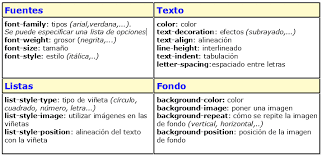
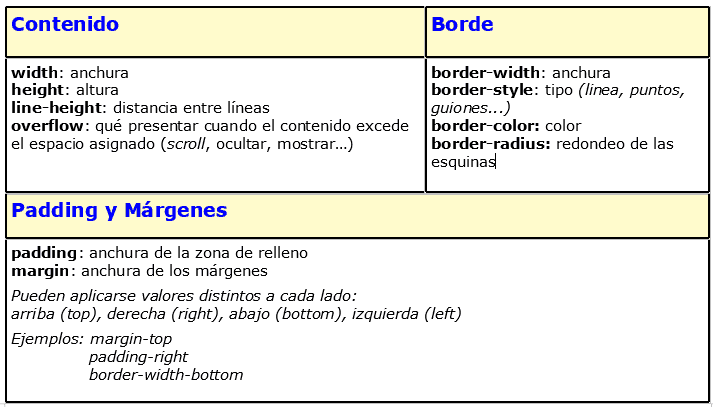

¿Qué es CCS? - Concepto
Las hojas de estilo en cascada (CSS, cascading style sheets) permiten crear páginas web atractivas.
Pero ¿cómo funcionan realmente? En este artículo explicaremos qué es el CSS con un ejemplo
de sintaxis sencillo y describiremos algunos términos clave sobre este lenguaje.

Oficial de CCS
Caracteristicas
--Complementariedad con documentos estructurados.
--Independencia del vendedor, la plataforma y el dispositivo.
--Mantenibilidad.
--Simplicidad.
--Combinación con lenguajes alternativos.
--Accesibilidad
Para más información, consulta el siguiente link:
Ver másProceso de instalación
CCS es el software que he visto instalar muy amigable. La instalación es muy simple. La versión superior no necesita ser descifrada. Aquí hay dos métodos de instalación (CCS8.2.0, CCS5.5.0). Los métodos de instalación para otras versiones son similares ( No se recomienda usar CCS con una versión demasiado baja, porque la versión oficial es demasiado baja para proporcionar parches).
- Paso 1: Apague el firewall de la computadora
- Paso 2: Apague el software antivirus de la computadora (tenga en cuenta que las computadoras de algunas personas tienen varios software antivirus desactivados)
- Paso 3: Recuerde no instalar el software CCS en la ruta china (de hecho, es el mismo para todo tipo de software, no los instale en la ruta china, de lo contrario pueden ocurrir problemas impredecibles)
Ver más
Video de proceso de instalación
Etiquetas de CSS

Para más información, consulta:
Ver más